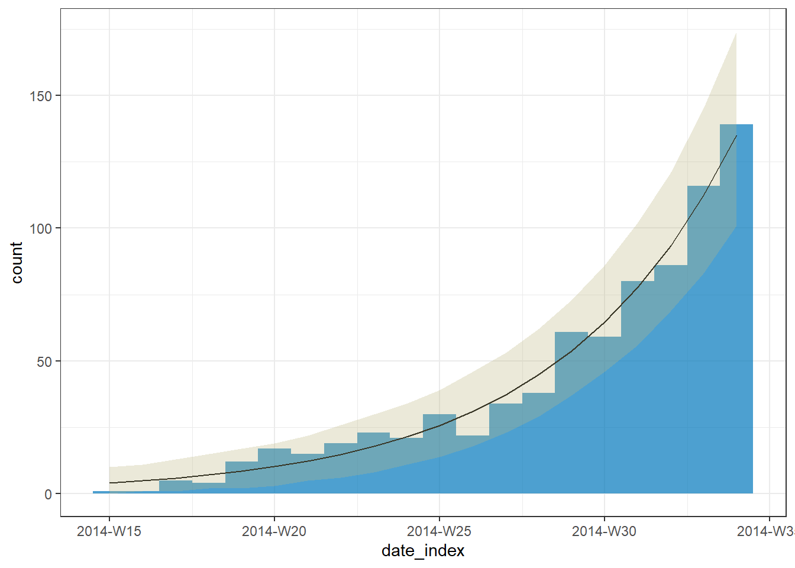

# Calculate the weekly growth rate of an outbreak
# Load required packages
library(outbreaks)
library(incidence2)
library(i2extras)
library(dplyr)
# Load the simulated Ebola outbreak data
data(ebola_sim_clean)
# Extract the first element of the list
linelist <- ebola_sim_clean$linelist
# Read linelist data
as_tibble(linelist)# A tibble: 5,829 × 11
case_id generation date_of_infection date_of_onset date_of_hospitalisation
<chr> <int> <date> <date> <date>
1 d1fafd 0 NA 2014-04-07 2014-04-17
2 53371b 1 2014-04-09 2014-04-15 2014-04-20
3 f5c3d8 1 2014-04-18 2014-04-21 2014-04-25
4 6c286a 2 NA 2014-04-27 2014-04-27
5 0f58c4 2 2014-04-22 2014-04-26 2014-04-29
6 49731d 0 2014-03-19 2014-04-25 2014-05-02
7 f9149b 3 NA 2014-05-03 2014-05-04
8 881bd4 3 2014-04-26 2014-05-01 2014-05-05
9 e66fa4 2 NA 2014-04-21 2014-05-06
10 20b688 3 NA 2014-05-05 2014-05-06
# ℹ 5,819 more rows
# ℹ 6 more variables: date_of_outcome <date>, outcome <fct>, gender <fct>,
# hospital <fct>, lon <dbl>, lat <dbl># Get an incidence2 object with case counts per week
# from data collected per day
incidence2_week <-
incidence2::incidence(
x = linelist,
date_index = "date_of_onset",
interval = "week"
)
# Read case counts per week
incidence2_week# incidence: 56 x 3
# count vars: date_of_onset
date_index count_variable count
* <isowk> <chr> <int>
1 2014-W15 date_of_onset 1
2 2014-W16 date_of_onset 1
3 2014-W17 date_of_onset 5
4 2014-W18 date_of_onset 4
5 2014-W19 date_of_onset 12
6 2014-W20 date_of_onset 17
7 2014-W21 date_of_onset 15
8 2014-W22 date_of_onset 19
9 2014-W23 date_of_onset 23
10 2014-W24 date_of_onset 21
# ℹ 46 more rows# Filter the dataset to keep the first 20 weeks.
incidence2_filter <- incidence2_week[1:20,]
# Model the incidence
incidence2_fit <-
i2extras::fit_curve(
incidence2_filter,
model = "poisson",
alpha = 0.05
)
# Print the model result
i2extras::growth_rate(incidence2_fit)# A tibble: 1 × 9
count_variable model r r_lower r_upper growth_or_decay time time_lower
<chr> <list> <dbl> <dbl> <dbl> <chr> <dbl> <dbl>
1 date_of_onset <glm> 0.184 0.168 0.200 doubling 3.77 3.46
# ℹ 1 more variable: time_upper <dbl># Plot the model result with prediction intervals
plot(incidence2_fit, ci = FALSE, pi = TRUE)
# Read plot documentation for an incidence2_fit object
# ?plot.incidence2_fit